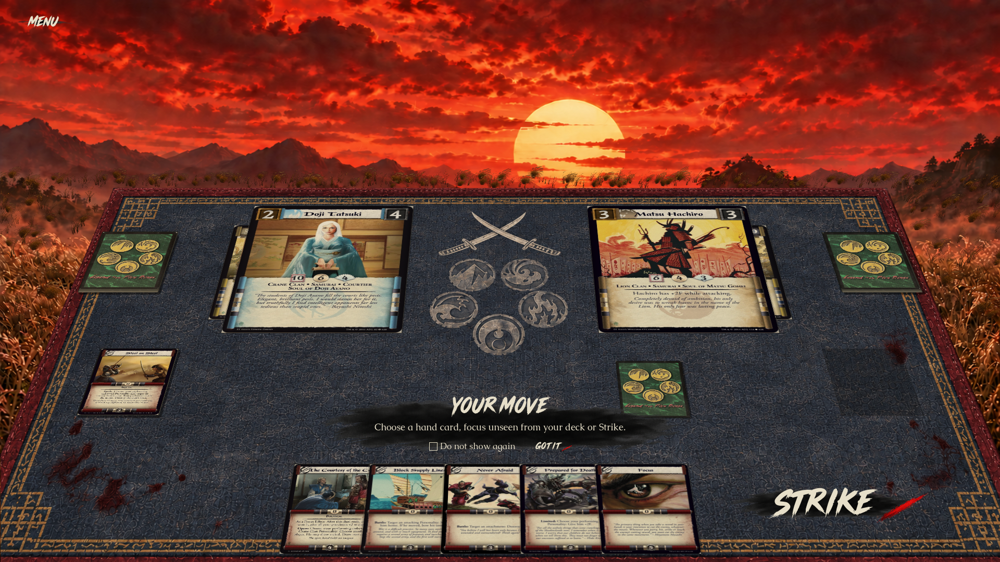
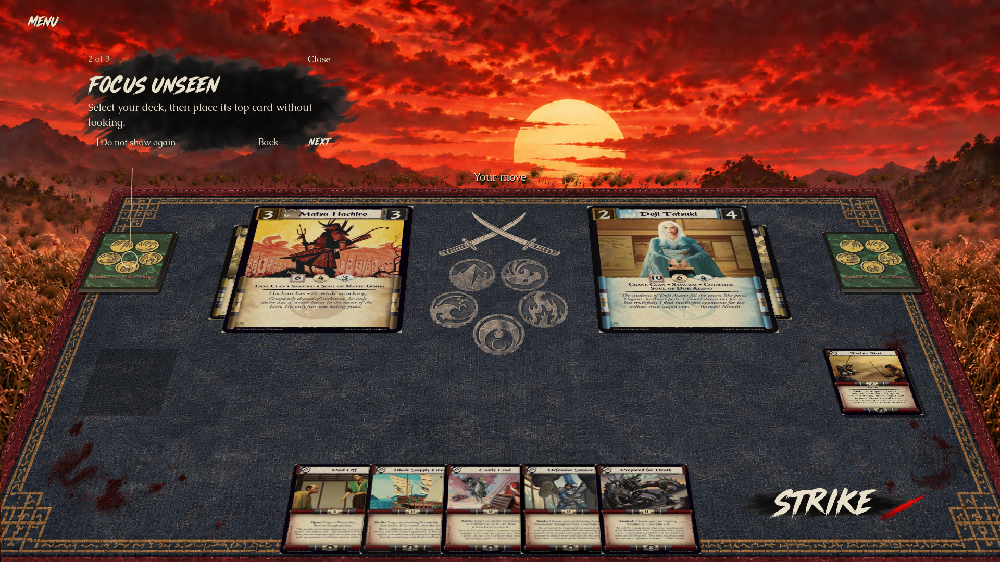
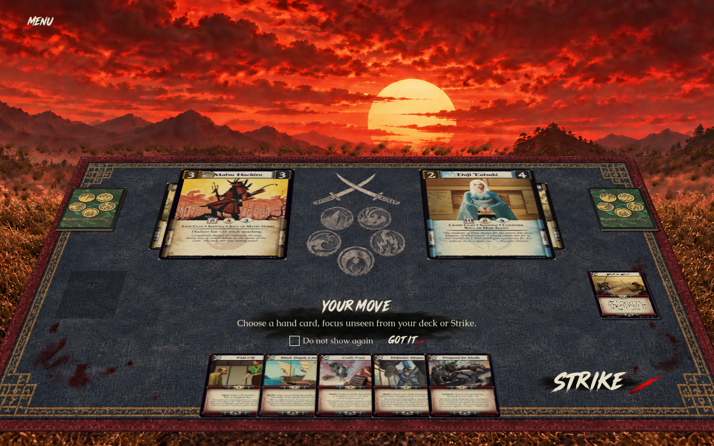
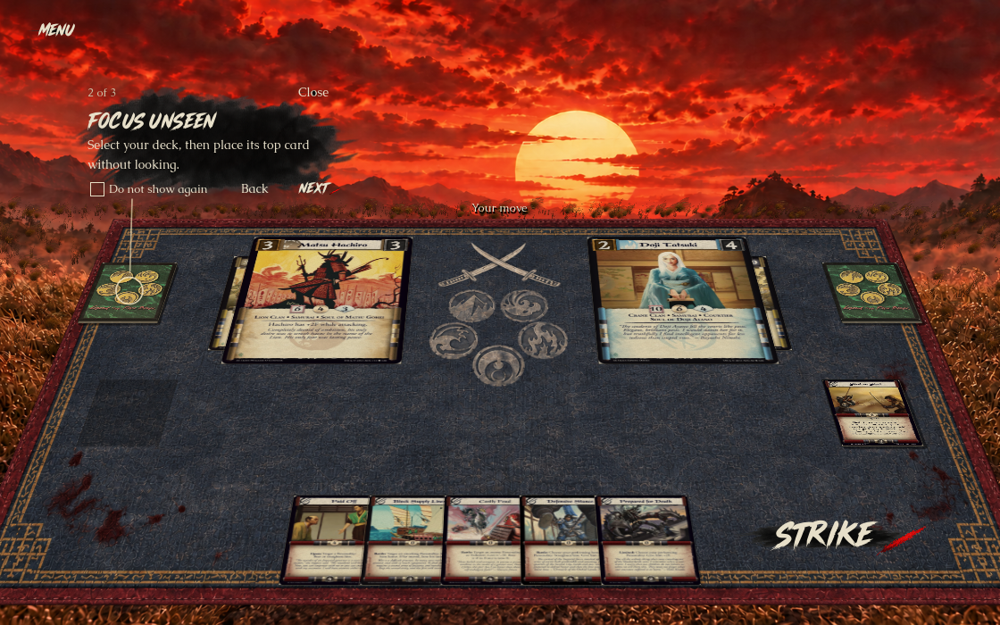
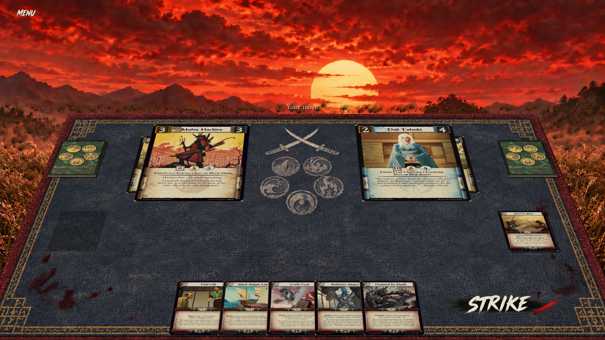
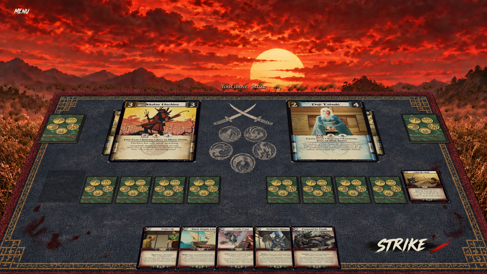

Alfredo selected 3 as the normal guidance, with 2 available for additional help. These compare the exact approved concepts with real native Godot captures at equal image width. No permanent clan/player, deck-count, discard-count or Focused plaques. The current player is on the left; original printed card scans and engine decisions remain live.

The unchecked option persists only when explicitly selected and dismissed. Got it without the checkbox dismisses this encounter; selecting a hand card or deck also clears the prompt. Menu can restore it. The essential turn indicator returns when the coaching prompt is hidden, avoiding duplicate “Your move” headings.


The help steps come from the currently permitted actions. They pause the solo opponent, remain available after opting out of automatic coaching, and never submit a command. Required decisions and results remain available. Native keyboard dismissal, checkbox input and guide-body clicks are checked for gameplay leakage.




The ink wash and red slash are dedicated imagegen-derived RGBA sprites; text is live Musashi Brush/Caudex. The texture and hierarchy follow the selected direction, while native perspective, real card faces, actual hand sizes and current scenery differ from the illustrative concept. The sky/grass are unchanged; AAA atmosphere acceptance and native Windows graphical testing are not claimed.
Validation and exact checks · Runtime asset prompts · Asset provenance